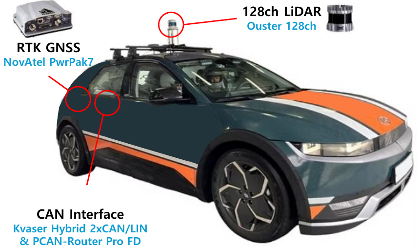

Fig. 5 — the onboard stack used for the closed-loop evaluation.
Lidar scans are deskewed and accumulated into a local elevation map of road
height; the lattice planner generates candidates, the wheel-path profile is
re-extracted per candidate and the model re-evaluated, and the resulting
ride-comfort cost is combined with the centerline, consistency and
curvature costs to select the executed trajectory.
Abstract
Ride comfort is a primary measure of quality in autonomous driving
services. Autonomous driving planners usually account for it through
jerk and similar terms that act on instantaneous motion, and rarely
evaluate the comfort of the whole trajectory, which is fixed once the
trajectory is selected. ISO 2631-1, the international standard for
whole-body vibration, scores comfort by weighting body acceleration
according to human sensitivity at each frequency, so that a slow sway
and a sharp shudder are not counted alike. Computing this score for a
trajectory before it is driven has relied on a vehicle dynamics model
calibrated to each specific vehicle. This paper proposes
RC-Scorer, a deep learning model based on a causal
Transformer that reads the road under a candidate trajectory and
predicts its frequency-weighted acceleration waveform, trained on
driving logs without a vehicle dynamics model or vehicle-specific
calibration. RC-Scorer is more accurate than existing methods based on
vehicle models or road-roughness indices, and also predicts what they
cannot: the weighted acceleration on all three axes, and the additional
measures the standard requires when a ride contains sudden jolts such as
bumps and potholes. On an autonomous vehicle, RC-Scorer reads a road
profile built from the vehicle's own lidar while driving and re-scores
every candidate at run time, reducing the measured ISO 2631-1 vibration
total value over obstacles by 75–84 % in the four layouts
where the obstacles can be fully avoided.
Method
Fig. 1 — architecture of RC-Scorer.
The four wheel-path road channels and the candidate trajectory are
embedded as a sequence of along-path tokens, prefixed by a single token
carrying the vehicle state at t0; three causal-masked
encoder layers, each attending under the causal mask, and an output head
emit the three-axis weighted body acceleration waveform over the
prediction horizon, which combines into the scalar av the
autonomous driving planner uses.
The quantity the standard defines
Each axis waveform is filtered by the weighting ISO 2631-1 prescribes
for that direction — Wd horizontal, Wk vertical —
giving aw,i, whose root mean square over a window combines
across the three translational axes into the point vibration total
value av, with the comfort factors
kx = ky = kz = 1.
Where a signal is dominated by shocks
Basic RMS evaluation then understates exposure, and the standard falls
back on three further descriptors, each defined on a single
weighted axis and none on the multi-axis av — the maximum
transient vibration value MTVV, the vibration dose value VDV, and the
crest factor. RC-Scorer produces all of them.
Scored per candidate, not per road
Let {τk} be the candidates the planner emits in one cycle.
For each τk the road height under the four tire contact
points along that candidate is extracted,
zk ∈ ℝ4×N with N = 500
samples at 100 Hz, assumed observable ahead to the horizon the
candidate spans. RC-Scorer maps these, with the candidate kinematics
and the current vehicle state, to the three-axis weighted waveform over
the next T = 5 s.
The road as the vehicle builds it
Offline the profile comes from the dataset's post-processed point
cloud; on the vehicle the same quantity is deskewed and accumulated at
run time into a ground-anchored grid by dead-reckoning assisted
registration. The two are not the same observation with noise added:
the onboard profile is assembled only from returns acquired
before the vehicle reaches a given spot. Unobserved stretches
are filled by linear interpolation — in the 4–8 Hz band where
the ISO weighting peaks, 2.25 mm against 3.50 mm for holding
the last value.
Causality in the architecture
Future road geometry cannot cause present vibration, and a causal mask
over self-attention enforces that rather than relying on the data to
teach it. The encoder has three pre-norm layers of width sixty-four with
four attention heads and a feed-forward width of two hundred fifty-six,
reads seventy-one tokens at a patch size of ten, and holds 175,070
parameters. Of the seventy road tokens, fifty cover the candidate's next
5 s and twenty the 2 s already driven; the latter also carry
the six inertial channels measured over that stretch. The model carries
no explicit vehicle representation and no vehicle-specific
calibration.
Training on the quantity that is reported
Because the reported quantity is a weighted RMS, that quantity is placed
in the loss: a waveform term, a relative band-energy term over seven
octaves spanning 0.5 Hz to 50 Hz, and a moment term on the
av distribution, weighted λband = 2 and
λav = 20. The log ratio makes the band
penalty relative, so quiet bands are not swamped by loud ones. Adam at
3×10−3, weight decay
10−4, a cosine schedule over forty epochs, gradient
clipping at unit norm.
Candidate-conditional re-evaluation.
For each candidate set submitted for scoring, the road grid is re-sampled
under each candidate's own four wheel paths to obtain zk.
RC-Scorer emits a three-axis weighted acceleration waveform for each
candidate, and the reduction gives av(τk), so the
comfort cost is evaluated for the road and the motion associated
with each candidate. The planner adds av(τk) to the
centerline, consistency and curvature costs of the lattice and executes the
lowest-cost candidate. Candidates are scored together in a batch, and the
road profiles and candidate inputs are refreshed for the next scoring cycle.
Fig. 3 — obstacle layouts for the closed-loop test
Six layouts, seen from above with the vehicle approaching from the left,
each putting a different question to the scorer. S1–S3 place speed
bumps under one or both wheel tracks. S4 places bumps of unequal height at
the same station, so no candidate avoids both and the appropriate response
is to move toward the lower one. S5 places three low, flat bumps
between the wheel tracks, where keeping the center leaves the
wheels clear. S6 places three potholes along one wheel track, where
lateral avoidance is appropriate.
scorer disabledscorer enabled
Experiments
Setup
Offline
CARD, a multi-country road dataset recorded in Germany and Italy that
provides four-wheel contact-point height, the planned trajectory and
synchronized IMU together. Evaluation uses a held-out split of 29
sequences and 13,875 windows — not the dataset's official one, which
divides stereo pairs rather than sequences. Because different sequences
retraverse the same roads, sequences are grouped by trajectory overlap
and each group is assigned whole to one side, leaving no road on both.
Windows are drawn at a stride of 0.25 s from 5 s spans and
therefore overlap by 95 %, putting the effective sample size
nearer 700 than 13,875. All methods share one weighting implementation,
identical wheel-path inputs and identical speed profiles, so differences
are attributable to the response model alone. Fitting the displacement
spectral density at the reference spatial frequency
n0 = 0.1 m−1 places
85.5 % of windows in ISO 8608 classes A to C.
Closed loop
An autonomous vehicle built on a Hyundai Ioniq 5. A roof-mounted Ouster
OS1 128-channel lidar at 10 Hz is accumulated into a ground-anchored
grid, from which four wheel-path height sequences
(4 × 500 samples at 100 Hz over 5 s) are
extracted per candidate; ground truth is a 100 Hz NovAtel PwrPak7
RTK-GNSS/INS. A lattice planner in the Frenet frame of the lane
centerline emits five candidates at lateral offsets 0,
±1.25 and ±2.5 m. RC-Scorer is deployed
unchanged from the offline evaluation, but the profile it reads
is no longer the post-processed one it was trained on.

Fig. 4 — the autonomous vehicle used for the closed-loop
evaluation, a battery-electric SUV carrying a roof-mounted
128-channel lidar and an RTK-GNSS/INS.
Applicability of the basic evaluation.
ISO 2631-1 conditions the basic RMS evaluation on the signal not containing
sudden jolts, and applying its two criteria to the measured vertical axis
over the validation windows, the crest factor exceeds nine on
0.34 % of them while VDV / (awT1/4)
exceeds 1.75 on 13.6 %. The second fraction is large enough that the
standard's own test rejects an evaluation by weighted RMS alone on that part
of the data, which is why VDV is reported alongside it.
Table I — comparison with model-based baselines
Mean absolute error on the offline validation split. The zero
column is a reference that predicts 0 for every window, so its error equals
the measured mean of each row. “—” marks a quantity the method
does not produce, not one left unmeasured.
Mean absolute error on the offline validation split
Metric
Baselines
Proposed
zero
IRI
AG
QC
RC-Scorer
MAE of the weighted RMS m s−2
aw,x
0.1670
—
—
—
0.0328
aw,y
0.1848
—
—
—
0.0229
aw,z
0.2581
0.0983
0.0900
0.0774
0.0377
av
0.3735
0.1031
—
—
0.0445
MAE of MTVV m s−2
aw,x
0.3114
—
—
—
0.0766
aw,y
0.3135
—
—
—
0.0579
aw,z
0.4071
—
—
0.1349
0.0692
MAE of VDV m/s1.75
aw,x
0.4176
—
—
—
0.0904
aw,y
0.4293
—
—
—
0.0675
aw,z
0.5934
—
—
0.1915
0.1016
MAE of the crest factor –
aw,x
—
—
—
—
0.7119
aw,y
—
—
—
—
0.5289
aw,z
—
—
—
0.7729
0.7369
The dashes report a capability gap before the numbers report an accuracy
gap. MTVV, VDV and the crest factor need a waveform to exist, and the IRI
and spectral routes emit a scalar roughness index; a vertical-only state
produces no horizontal response at all. On the vertical axis RC-Scorer cuts
the quarter-car's error from 0.0774 to 0.0377 m s−2,
and the margin widens on the descriptors (0.1349 → 0.0692 on
MTVV, 0.1915 → 0.1016 on VDV). The horizontal axes, which none
of these model-based methods reach, are held to 19.6 % and
12.4 % of their measured levels, the same band as the vertical axis
at 14.6 %. On av — the one direct comparison in the paper,
where IRI and RC-Scorer predict the same quantity against the same reference
mean — RC-Scorer is 2.3 times more accurate.
A second vehicle. On 15 validation sequences (3,830
windows) recorded with the closed-loop vehicle, whose lidar and roads differ
from those of CARD, RC-Scorer trained only on those logs reaches an
av MAE of 0.1138 m s−2 against 0.4292
for the zero reference. Initializing from the CARD model and
fine-tuning gives 0.0985. No vehicle-specific quantity is fitted in either
case.
Fig. 2 — three surfaces of increasing roughness
Fig. 2 — three surfaces from the offline split, one column
per ISO 8608 roughness class: A (smooth), B (typical) and C (rough).
Top: the accumulated height map across the lane with the four
wheel paths, the three panels sharing one height scale.
Middle: the ISO-weighted vertical acceleration that surface
produced. Bottom: its one-third-octave spectrum. Ahlin–Granlund
and the IRI regression carry no curve in the lower two rows: each produces
a single scalar per window, and no waveform exists from which MTVV, VDV or
the crest factor could be formed.
On the smooth surface the one large event in the window is a patch of
roughness late in the run, and the prediction reproduces it rather than
averaging it away: RC-Scorer returns aw,z = 0.165
against a measured 0.172 m s−2. On the typical
surface the quarter-car alone oscillates at its wheel-hop resonance near
10 Hz, a peak several times the measured spectrum, and its weighted RMS
reaches 0.702 against a measurement of 0.269, where RC-Scorer stays at
0.253: putting a vehicle model in the loop puts that model's resonance into
the output. On the rough surface the prediction departs from the measurement
in shape, yet the combined value tracks it anyway (0.330 against
0.339 m s−2), because that shape error is
orthogonal to the combination.
Table II — component ablation of the loss function
The three components switched on and off. ISO-W applies the
ISO weighting to the training target, Band is the relative
band-energy term and Moment is the term on the
av distribution. Columns run from no component to all three, and
the three middle columns each remove one term from the full configuration.
The row minimum is in bold.
Component ablation of the loss function, MAE per row
Configuration
none
ISO-W only
− ISO-W
− Band
− Moment
full
Mean absolute error m s−2, except VDV m/s1.75 and the dimensionless crest factor
aw,x
0.0332
0.0525
0.0410
0.0425
0.0332
0.0328
aw,y
0.0254
0.0316
0.0647
0.0301
0.0236
0.0229
aw,z
0.0670
0.0612
0.0699
0.0454
0.0396
0.0377
av
0.0643
0.0814
0.0884
0.0498
0.0515
0.0445
MTVV (az)
0.0977
0.0873
0.1470
0.0764
0.0637
0.0692
VDV (az)
0.1587
0.1406
0.1996
0.1132
0.0949
0.1016
crest (az)
0.6731
0.6187
0.7038
0.6510
0.6012
0.7369
Applying the ISO weighting to the target alone hurts, raising
av MAE from 0.0643 to 0.0814: the weighting changes the spectral
distribution of the target and no loss term reads that distribution. The
band log-ratio term is what reads it — adding it recovers the error to
0.0515, and removing it from the full configuration costs 0.0053. The moment
term buys a further 0.0070 on av at a price visible in the lower
block, where the configuration without it is the more accurate on all three
descriptors: it matches the distribution of the reported quantity, which a
peak-based descriptor does not need.
Test site
Every paired run was driven on the same course at a proving ground. Two
sections were used: a straight multi-lane section for the bump layouts, and
a narrow walled corridor for the pothole layout.
a
Straight multi-lane section, driven north to south in lane 2 — the bump
layouts S1–S5.
b
Narrow walled corridor, driven south to north on the lane centre line —
the pothole layout S6.
Satellite imagery: VWorld, Ministry of Land,
Infrastructure and Transport, Republic of Korea.
Table III — closed loop on an autonomous vehicle
Six pairs, one per obstacle layout at a nominal
15 km h−1, with the scorer disabled and enabled
on the same course. The closed-loop criterion is av, the quantity
RC-Scorer is scored on offline and the one the planner uses: reporting the
combined value charges the lateral and longitudinal acceleration produced by
the avoidance manoeuvre against the vertical improvement it buys, so the
reduction is what survives that trade.
Paired closed-loop comparison, in-zone measured values, scorer disabled to enabled
Cell
axis-weighted RMS m s−2
ISO 2631-1 av
shock descriptors and peak
aw,x
aw,y
aw,z
av
Δav
MTVVz
VDVzm/s1.75
|aw,z|peak
Avoidance available
S1
0.161 → 0.050
0.552 → 0.205
1.194 → 0.107
1.325 → 0.236
−82 %
1.926 → 0.145
3.129 → 0.224
6.085 → 0.390
S2
0.164 → 0.042
0.509 → 0.146
0.880 → 0.076
1.030 → 0.170
−84 %
1.542 → 0.119
2.999 → 0.183
5.004 → 0.312
S3
0.211 → 0.053
0.600 → 0.249
0.905 → 0.095
1.107 → 0.272
−75 %
1.604 → 0.155
2.462 → 0.250
4.066 → 0.475
S6
0.128 → 0.049
0.449 → 0.199
0.927 → 0.094
1.038 → 0.225
−78 %
1.459 → 0.119
2.217 → 0.172
4.033 → 0.250
No clean candidate — partial by design
S4
0.284 → 0.083
0.546 → 0.250
1.261 → 0.467
1.374 → 0.536
−61 %
2.416 → 0.892
3.398 → 1.355
6.516 → 2.753
Moving is the wrong answer — center held
S5
0.050 → 0.051
0.023 → 0.022
0.075 → 0.068
0.093 → 0.088
−6 %
0.092 → 0.086
0.135 → 0.126
0.184 → 0.192
The three axes are given beside av so that a reduction produced by
the road can be told from one produced by the manoeuvre, and
Δav states the same change as the percentage the comfort
literature reports. MTVV and VDV are defined by ISO 2631-1 on a single
weighted axis, so only the vertical one is listed. In every pair the
evaluated intervals occupy the same longitudinal range. The weighted
vertical peak falls by 88 % to 94 % in the full-avoidance
layouts.
Fig. 6 — closed-loop behaviour
Fig. 6 — closed-loop behaviour at
15 km h−1.
Each panel shows the accumulated road-height grid in bird's-eye view with
the trajectory driven with the scorer disabled and the one driven with it
enabled, the measured vertical acceleration over the obstacle zone, and
the per-candidate predicted av at the approach. S6 overlays its
driven paths on a separately recorded reference height map.
S4 behaves as designed
With no clean candidate the planner moves toward the lower obstacle, and
av falls 61 % despite the absence of a clean choice.
The residual is the difference between striking a low bump and a high
one, not a failure to avoid.
S5 carries the negative case
Both runs keep their wheels clear of the bumps, with mean lateral
positions of −0.063 and −0.038 m in the obstacle zone.
Across the approach and passage the enabled scorer selects the center in
all 75 recorded cycles, and the center has the lowest predicted
av of the five candidates in 62 of them: the model scores the
center as the best option rather than being restrained from moving.
S6 demonstrates avoidance
The disabled run stays near the center, whereas the enabled run shifts
left by 0.47 m on average in the obstacle zone (maximum
0.64 m), reducing av by 78 %. The offset is
selected and applied on the approach and is reached in the zone after
the tracking delay.
Prediction against measurement
Over the 136 of 1,016 windows whose driven path and speed match the
scored candidate, the predicted-to-measured ratio is 0.994 in the 19
avoidance windows and 2.91 in the 65 center-holding windows, where the
measured level is near zero. These windows overlap and are not
independent — varying the lateral tolerance from 0.1 m to
0.3 m moves the avoidance ratio from 0.982 to 1.190 — so uniform
absolute accuracy under the onboard road input is not established.
Computational performance
The ride-comfort scorer ran on a Jetson AGX Orin using its embedded GPU,
while the remaining processes ran on a separate computer. Across six runs,
the median time required to score five candidate trajectories ranged from
88 ms to 109 ms.
Limitations
The closed-loop evaluation is small. Each reported cell
contains one disabled and one enabled run, so the reductions are point
estimates without repeatability estimates. Only the nominal
15 km h−1 setting is reported; mean in-zone
speeds span 11.8 to 14.4 km h−1, with
within-pair differences no greater than 0.6 km h−1.
Inside the evaluated zone, av includes the horizontal
acceleration of the manoeuvre. Avoidance changes travel time by at most
0.27 s and lowers longitudinal and lateral jerk wherever the path
changed, but raises the RMS steering rate by a factor of 1.7 to 4.8; the
margin to the lane boundary is not measured.
High-amplitude calibration and candidate ordering remain
unresolved. Untraversed candidates have no measured outcomes, so
their predicted ordering is not validated by the observed path changes. The
offline split is lower in amplitude than the obstacle zones (mean
av of 0.3735 against 1.0 to
1.4 m s−2), so the closed-loop result supports
the ordering, not accuracy at those levels. No learning baseline or second
seed is run, so the gain is not split between the architecture and learning
from logs.
The change of road input is shown to work, not
characterized. RC-Scorer is trained on post-processed profiles and
deployed on ones the vehicle accumulates at run time. Dropout, vertical
precision and resolution are not varied independently, so how accuracy falls
off with road-estimate quality is uncharacterized.
Videos
Onboard footage from the paired closed-loop runs, four synchronised camera
angles at once.
—
No recording matches this filter.
BibTeX
@inproceedings{rcscorer,
title = {RC-Scorer: Standardized Ride Comfort Prediction for
Candidate Trajectories Without a Vehicle Model},
author = {Anonymous},
booktitle = {Under review},
year = {2027}
}